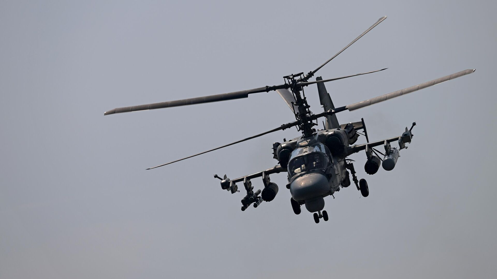

КА-52
Ка-52 «Аллигатор» (по кодификации НАТО — Hokum B) — российский разведывательно-ударный вертолёт нового поколения. Машина способна поражать бронированную и небронированную технику, живую силу и воздушные цели на поле боя. Представляет собой дальнейшее развитие вертолёта Ка-50 «Чёрная акула».
До прекращения серийного производства Ка-50 в 2009 году в качестве специфики боевого применения Ка-52 предусматривалось выполнение им задач командирской машины армейской авиации, осуществляющей разведку местности, целеуказание и координацию действий группы боевых вертолётов. Помимо выполнения разведывательно-боевых функций, Ка-52 может выполнять роль учебно-тренировочной машины.
Вариант корабельного базирования Ка-52К может оснащаться сравнительно более мощным, чем большинство ударных вертолётов армейской авиации, комплексом управляемого вооружения (КУВ) «Гермес-А» с максимальной дальностью стрельбы 15—20 км.
По контракту Минобороны РФ и ПАО «Арсеньевская авиационная компания „Прогресс“ им. Н. И. Сазыкина» от 2011 года планируется произвести 140 вертолётов на общую сумму 120 млрд рублей. Стоимость одного вертолёта — около 857 млн рублей.
ТТХ:
- Экипаж: 2 человека (пилот и штурман-оператор)
- Длина: 16,0 м
- Длина фюзеляжа: 14,2 м
- Диаметр несущего винта: 14,5 м
- Размах крыла: 7,3 м
- Высота: 5 м
- Максимальная взлётная масса: 10 800 кг
- Масса топлива во внутренних баках: 1487 кг (1732 кг в 4 × 500-л ПТБ)
- Мощность двигателей: 2 × 2400 л. с. (на взлётном режиме) на чрезвычайном режиме: 2 × 2700 л. с. на крейсерском режиме: 2 × 1750 л. с.